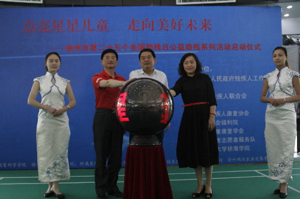
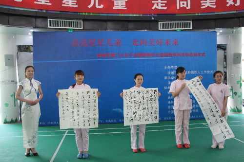
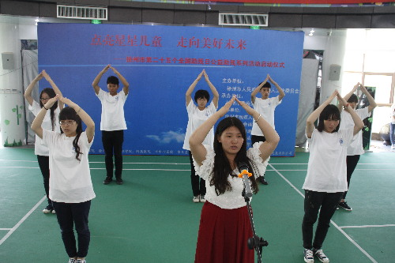

徐州市第二十五个全国助残日公益助残系列活动策划
桂电志愿者网 日期：2015-05-25 来源：



一、活动背景
孤独症儿童是一个特殊而困难的群体。“十二五”期间，国家采取了多项措施加强孤独症儿童的康复教育工作，支持省、地市级孤独症儿童康复教育机构建设，开展贫困孤独症儿童抢救性康复项目工作，在部分地区开展社区家庭康复试点。
第二次全国残疾人抽样调查结果显示，我国0-6岁精神残疾儿童占该年龄段儿童总数的0.11%，约为11.1万人，其中多数由儿童孤独症导致。由于孤独症的特殊性和严重性，需要长期系统的康复教育和训练,而康复教育训练和服务资源相对不足，而且孤独症儿童数量还在持续增加，他们面临的困难和问题需要全社会给予关心帮助和大力支持。
二、活动时间
5月16日上午10点
三.活动地点
徐州市儿童福利院禾润儿童康复中心
四、活动主题
关注孤独症儿童，走向美好未来
五、主办单位
徐州市人民政府残疾人工作委员会
六、承办单位
徐州市残疾人联合会
七、协办单位
徐州市残疾人康复协会
徐州市残疾儿童康复学会
徐州市社会福利院禾润儿童康复中心
徐州市春天的使者志愿服务队
八、支持单位
中国矿业大学徐海学院
江苏师范大学科文学院
徐州医学院护理学院附属医院
徐州九州大学
徐州市文学艺术界联合会
徐州市消费者协会
徐州幼儿高等专科学校
徐州幼师幼教集团
徐州市儿童医院
徐州市第一人民医院眼病防治研究所
徐州复兴眼科医院
徐州市浙江商会
上海浦东发展银行徐州分行
徐州市矿山医院
徐州市同济辅具服务中心
九、参与人员
1、邀请市政府副市长、市残工委主任王安顺同志
2、邀请中国矿业大学徐海学院于威书记
3、各个协办、支持单位代表
4、残疾儿童及家长
5、徐海学院大学生阳光心灵工作中心成员
6、禾润儿童康复中心成员
7、医学院、矿大志愿者
十、 活动流程
1.主持人介绍参与活动的嘉宾并宣布活动开始
2.市残联李敬峰理事长讲话
3.副市长王安顺、徐海于威书记、师大董书记为星星家园成立做启动仪式
4.爱心卡发放仪式
5.爱心物品捐赠
（1）书画协会捐赠作品，作者代表马亚先生讲话
（2）浦发银行
（3）徐州浙江商会
6.快乐直通车——春天的使者志愿服务队志愿者与儿童一对一结对活动
7.参与人员合影
8.文艺演出（节目单见附录）
十一、附录
（一）节目单
1.舞蹈《水边的姑娘》
表演者：中国矿业大学徐海学院艺术团
2.萨克斯独奏《知足》
表演者：浦发银行
3.歌舞《运动操》《身体音阶歌》
表演者：福利院
4.街舞《A-one》
表演者：中国矿业大学徐海学院艺术团
5.歌曲《歌曲串烧》
表演者：中国矿业大学徐海学院
6.舞蹈《花流水》
表演者：徐州医学院护理学院
7.小品《试戏》
表演者：中国矿业大学
8.广场舞《小苹果》《最炫民族风》
表演者：中国矿业大学徐海学院、福利院
9.二胡独奏《彩霞扑蝶》
表演者：徐州医学院护理学院
10.手语操《感恩的心》
表演者：中国矿业大学徐海学院
【责任编辑：李想】